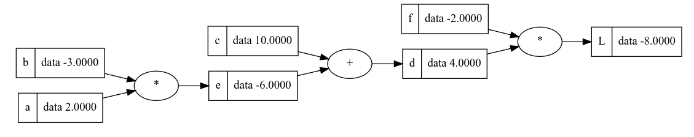

Intro
Some notes to Micrograd from Andrej Karpathy.
- Andrej Karpathy video: Micrograd Video
- Andrej Karpathy code from the video: Code from the Video
- Andrej Karpathy micrograd implementation: Micrograd implementation
Micrograd
Micrograd is a compact autograd-/deep-learning- engine. It implements backpropagation to calculate the gradients of a mathematical function. Furthermore it provides Classes for Neurons, Layers and MultiLayerPerceptrons to build out neural network (which is also only mathematical function) to do backpropagation on it.
Autograd
Autograd (Automatic Gradient) records a graph recording all of the operations that created the data as you execute operations, giving you a directed graph. The leafs are the input tensors and roots are the output tensors. By tracing this graph from roots to leaves, you can automatically compute the gradients using the chain rule.
Derivative
For Micrograd (and deep-learning) it is important to understand what a derivative is and what information it outputs.
The derivative of a function describes the function’s instantaneous rate of change at at certain point. Another common interpretation is that the derivative gives us the slope of the line tangent to the function’s graph at that point.
Example of derivative of a simple function:
f = 3x**2 - 4x + 5
h = 0.001
x = 3.0
how_much_the_function_responded = f(x+h) - f(x)
slope (rise over run) = (f(x+h) - f(x))/h
In a point you interested, you slightly bump up that point (increase it by a small number h). How does the function respond with that sensitivity does it respond what is the slope at that point does the function go up or down and how much.
Value Object
Micrograd core object is the value object. It has the following parameters:
- value (the current value data)
- gradient (derivative of the value concerning the input of the function)
- _backward (backward function that calculates via chaining the outputs gradients into the local gradients)
- _prev (children that produced the value of this value object)
- _op (operation of sign as string for printing)
The value object has methods to perform calculations with different operations. Graphviz library was used to draw out the graph of the mathematical functions of the values, gradients and operations used on the value objects.
Forward pass
Computes an output for a neuralnetwork. The forward pass takes inputs and weights to calculate the output.
With the implementation of the value objet and putting the mathematical expression together the forward pass i complete and the output is computed.
a = Value(2.0, label = 'a')
b = Value(-3.0, label = 'b')
e = a * b; e.label = 'e'
## e = -6
c = Value(10.0, label = 'c')
d = e + c; d.label = 'd'
## d = 4
f = Value(-2.0, label = 'f')
L = d * f; L.label = 'L'
## L = -8
Chainrule
If a variable z depends on the variable y, which itself depends on the variable x (that is, y and z are dependent variables), then z depends on x as well, via the intermediate variable y.
In this case the chain rule is expressed as
dz/dx = dz/dy * dy/dx
Intuitive explanation: The chain rule states that knowing the instantaneous rate of change of z relative to y and that of y relative to x allows one to calculate the instantaneous rate of change of z relative to x as the product of the two rates of change.
“If a car travels twice as fast as a bicycle and the bicycle is four times as fast as a walking man, the car travels 2 x 4 = 8 times as fast as the man.”